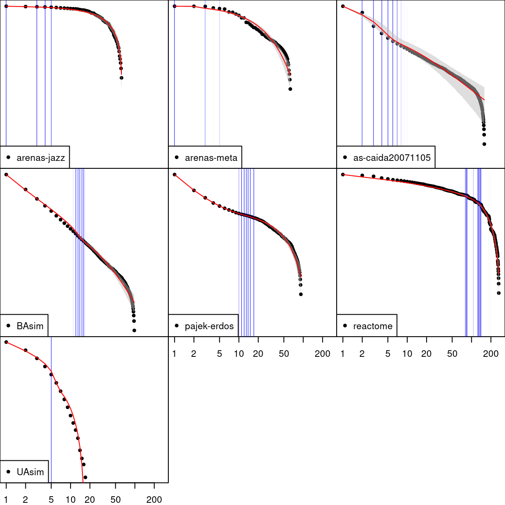
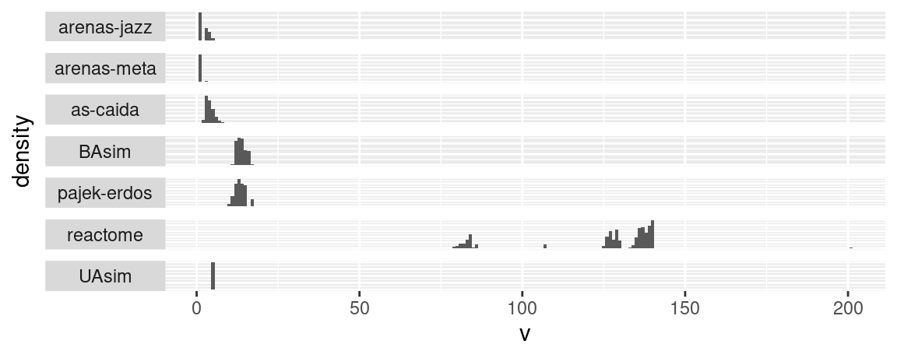
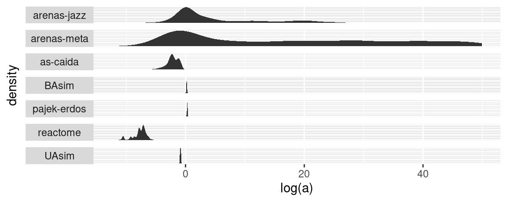
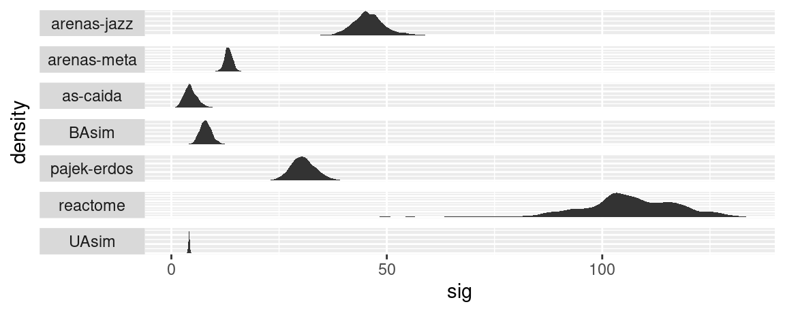
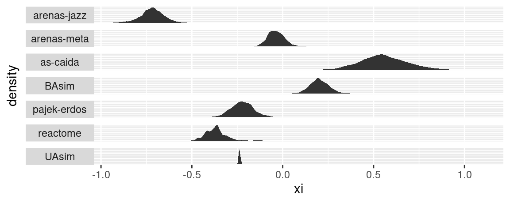
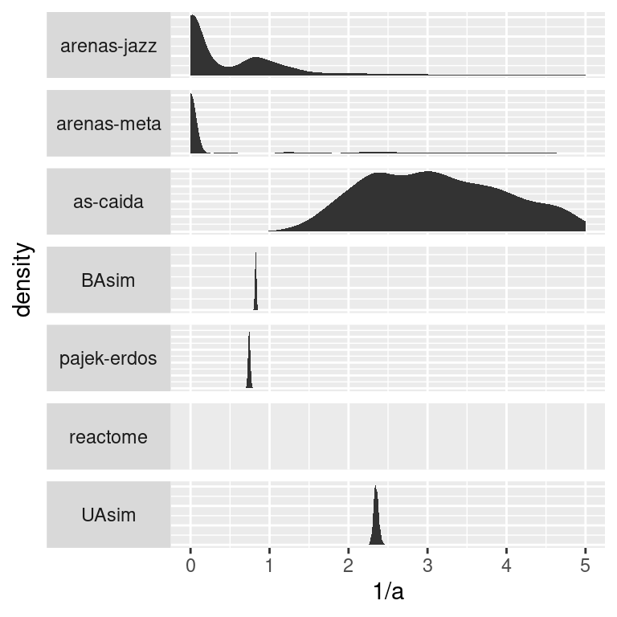
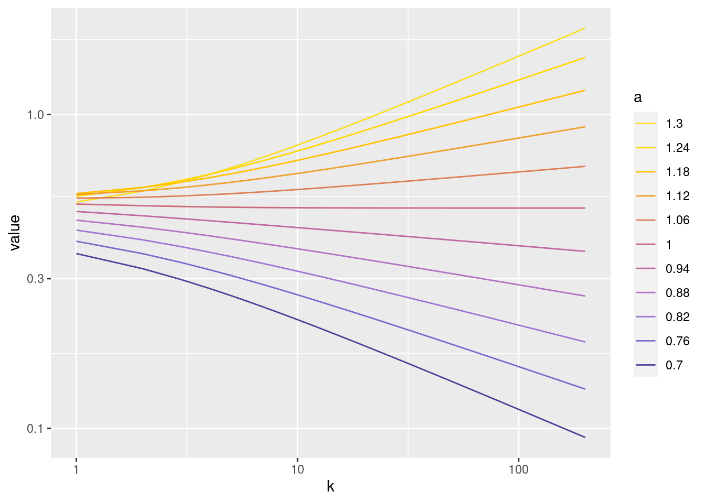
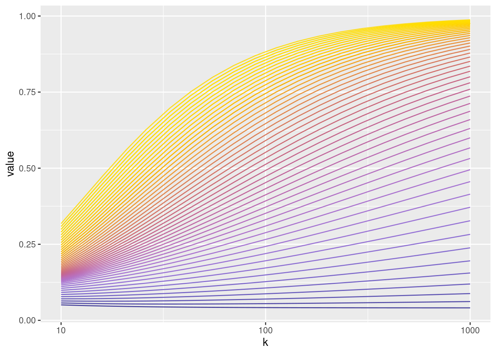

Annual Progress Review
1 Introduction
Since the aim is to gain understanding about the behaviour of the degree distribution of networks at the right tail, it seems natural to look to using methods from extreme value theory.
2 Extreme Value Theory
This section begins with a review of the theory and methodology for modelling the extreme values of continuous random variables, before moving to considerations for modelling the extreme values of discrete random variables.
2.1 Continuous Extremes
Studying the properties of the extreme values of a random variable first requires determining what exactly is considered to be an extreme value. In this section extreme values of two kinds are considered, both of which can be characterised.
The first kind of extreme value considers the distribution of block maxima. That is, for a set of independent and identically distributed (iid) random variables \(X_1,\ldots,X_n\) with common cumulative density function (cdf) \(F\) what is the limiting distribution of \(M_n = \max\{X_1,\ldots,X_n\}\)?
Clearly, as \(n\rightarrow \infty\), the block maxima \(M_n\) converges almost surely to the right endpoint of \(F\). However, standardising the block maxima allows for some characterisation of the limiting distribution.
Theorem 1 (Fisher–Tippett–Gnedenko Theorem) With \(X_1, \ldots,X_n \overset{\mathrm{iid}}{\sim} F\) and \(\{ a_n\}_{n\ge0}, \{ b_n\}_{n\ge0}\) such that:
\[\lim_{n\rightarrow\infty}\Pr\left(\displaystyle\frac{1}{a_n}[M_n-b_n]\le x\right) = G(x),\] for some non-degenerate \(G\).
Then \(F\) is said to be in the (maximum) domain of attraction of \(G\), denoted \(F\in\mathcal D(G)\) ,and \(G\) is of one of three types:
- Gumbel: \(\Lambda(x) = \exp\{-\exp(-x)\},\quad x \in \mathbb R\)
- Fréchet: \(\Phi_\alpha(x) = \exp\{-x^{-\alpha}\},\quad x\ge 0,\alpha>0\)
- Negative-Weibull: \(\Psi_\alpha(x) = \exp\{-x^{-a}\},\quad x<0,\alpha>0\)
Each of these three types defines a domain of attraction.
Definition 1 (Domains of Attraction) The three domains of attraction that result from Theorem 1 have the following equivalent conditions:
For a distribution with cdf \(F\) and survival function \(\bar F\) that has right endpoint \(x_F\) given by: \[ x_F = \sup\{x \in \mathbb R \cup\{\infty\}:F(x)<1\} \] the distribution belongs to each domain of attraction subject to the conditions below:
If there exists a positive function a
- Type I/Gumbel/\(\mathcal D(\Lambda)\):
\[ \lim_{x\uparrow x_F} \displaystyle\frac{\bar F(x+ta(x))}{\bar F(x)} = e^{-t},\quad \forall t\in\mathbb R \]
If \(x_F=\infty\):
- Type II/Fréchet/\(\mathcal D (\Phi_\alpha)\):
\[ \lim_{x\rightarrow\infty} \displaystyle\frac{\bar F(tx)}{\bar F(x)} = x^{-\alpha}, \quad \forall t>0 \quad \text{ for some } \alpha>0 \]
If \(x_F<\infty\):
- Type III/Negative-Weibull/\(\mathcal D(\Psi_\alpha)\):
\[ \lim_{h\downarrow 0}\displaystyle\frac{\bar F(x_F-xh)}{\bar F(x_F-h)} = x^\alpha, \quad\alpha>0 \]
The parameter \(\alpha\) in Definition 1 and Theorem 1 is called the extreme value index.
Here, distributions in the Gumbel domain are referred to as light tailed, distributions in the Negative-Weibull domain are referred to as short tailed, and those in the Fréchet are referred to as heavy tailed.This terminology for heavy tailed distributions in different ot some of the literature that defined a heavy tailed distribution as one that decays slower than exponential. However the terminology used here is also widely used.
Throughout this report functions will be referred to as regularly varying or slowly varying, what is meant by this is formally deined below:
Definition 2 (Regular Variation) A positive,real valued, measurable function \(f\) is said to be regularly varying at infinity with index \(\gamma\) if for all \(t>0\):
\[ \lim_{x\rightarrow\infty}\displaystyle\frac{f(tx)}{f(x)} = x^{\gamma}. \] If \(\gamma =0\), then \(f\) is instead said to be slowly varying at infinity.
Note that the condition for a distribution to belong to the Fréchet domain of attraction is equivalent to saying that the survival function \(\bar F\) is regularly varying with index \(-\alpha\).
In addition to heavy tailed distributions it is also useful to define what will be referred to as super heavy tailed distributions. This term is often just refers to specific distributions such as the log-Cauchy ,log-Gamma,and log-Weibull distributions but [1] provides a more precise definition below:
Definition 3 (Super Heavy Tails) A distribution is with survival function \(\bar F\) is said to have super heavy tails if: \[ \lim_{x\rightarrow\infty}\displaystyle\frac{\bar F(tx)}{\bar F (x)} = 1,\qquad \forall t>0 \] That is, a distribution is called super heavy if its survival function is slowly varying.
The three main types of extremal distribution (Gumbel, Fréchet and Negative-Weibull) can be united into one distribution, called the Generalised Extreme Value (GEV) distribution.
Definition 4 (Generalised Extreme Value Distribution) Denoted by \(\text{GEV}(\mu,\sigma,\xi)\) the distribution is characterised by three parameters \(\mu \in \mathbb R\) the location, \(\sigma\in \mathbb R^+\) the scale, and the shape \(\xi\in \mathbb R\). It has support on \(\{x\in \mathbb R:1+\xi(x-\mu)/\sigma > 0\}\) and has cdf given by:
\[ G(x) = \begin{cases}\exp\left\{-\left(1+\displaystyle\frac{\xi(x-\mu)}{\sigma}\right)_+^{-1/\xi}\right\},&\xi\ne0\\ \exp\left\{-\exp\left(-\displaystyle\frac{x-\mu}{\sigma}\right)\right\},&\xi=0. \end{cases} \]
The three types of extremal distribution are obtained from changing the shape parameter \(\xi\), which corresponds to \(1/\alpha\) in Theorem 1. This change is generally made so that the largest \(\xi\) corresponds to heavier tails of the distribution. Specifically, \(\xi<0\), \(\xi=0\), \(\xi>0\), correspond to the negative Weibull, Gumbel and the Fréchet domains of attraction respectively.
Another kind of extreme values are the observations above a large threshold, like the limiting distribution of block maxima, the limiting distribution of these extreme values can be characterised by the generalised pareto (GP) distribution.
Definition 5 (Generalised Pareto Distribution) Consider a random variable \(X\) with the same cdf \(F\) as in Theorem 1, the Generalised Pareto (GP) distribution can be obtained by using the GEV distribution and conditional probability such that for large enough threshold the GP distribution approximately describes the conditional distribution of threshold exceedances. More precisely, for sufficiently large threshold \(u\) and the change of variable to \(Y=X-u\): \[ \Pr(Y\le y | Y>0) = H(y) = \begin{cases} 1-\left(1+\displaystyle\frac{\xi y}{\sigma}\right)^{-1/\xi},&y>0,\xi\ne 0 \\ 1-\exp\left(-\displaystyle\frac{y}{\sigma}\right),&y>0,\xi = 0 \end{cases} \]
Since this distribution was obtained using a \(\text{GEV}(\mu,\sigma^*,\xi)\) the shape parameter \(\xi\) is identical in both distributions and the shape parameter \(\sigma\) is defined such that \(\sigma = \sigma^* + \xi(u-\mu)\).
It is also possible to derive the result without using the GEV, as shown in [REF].
2.2 Discrete Extremes
A lot of Section 2.1 is appropriate only for continuous random variables and some of the results may not hold in a discrete setting. In particular, a continuous distribution \(F\) being in certain domain of attraction may not necessarily imply that a discretisation of \(F\) remains in that domain of attraction.
Definition 6 (Discretisation) The discretisation of a distribution with cdf \(F\) is given by
\[F^*(n) = F(n) - F(n-1), \quad n \in \mathbb Z\]
[2] provides conditions for a discretisation of a continuous distribution to belong to the same domain of attraction. In particular the following theorem which corresponds to Theorem 1 in [2].
Theorem 2 (Domain of attraction consistency)
- Every discretisation of distribution in \(\mathcal D(\Phi_\alpha)\) remains in \(\mathcal D(\Phi_\alpha)\).
- The discretisation of a distribution remains in \(\mathcal D(\Lambda)\) if and only if the original is in \(\mathcal D(\Lambda)\cap \mathcal L\).
Where \(\mathcal L\) is the set of long-tailed distributions that have the property: \[ \lim_{x\rightarrow \infty}\displaystyle\frac{\overline F(x+1)}{\overline F(x)} = 1 \]
In addition [2] introduces a quantity useful for determining the domain of a attraction that a discrete distribution belongs to.
Definition 7 (Omega Function) For a distribution \(F\) with survival function \(\overline F\) and some \(n\in\mathbb Z^+\) let:
\[ \Omega(F,n) = \left(\log\displaystyle\frac{\overline F (n+1)}{\overline F (n+2)}\right)^{-1} - \left(\log\displaystyle\frac{\overline F (n)}{\overline F (n+1)}\right)^{-1} \]
This quantity plays an important role in Section 4 when determining the domain of attraction to which the degree distribution of a network generative model belongs. In particular a discrete distribution is recoverable to the Fréchet domain of attraction \(\mathcal D(\Phi_\alpha)\) if: \[ \lim_{n\rightarrow\infty}\Omega(F,n) = \alpha^{-1} \]
Applying ideas from Section 2.1 to modelling discrete random variables has been approached from many different directions. What follows is a overview of some of the approaches that have been taken but will see use in this report.
[3] note that using the GP distribution as an approximation in a discrete setting leads to bias in the likelihood function and can lead to it being inadequate for modelling. They propose two other peaks over threshold methods that rely on parametric families of discrete distributions. The first, what they refer to as the discrete generalised Pareto approximation is based on an extension of the discrete survival function. The second, the generalised Zipf distribution is obtained from an extension of the probability mass function. Both methods are motivated theoretically for modelling of a large class of discrete distributions and are shown in the paper to either match or outperform using the GP to model discrete data directly.
[4] first introduce an extended GP distribution, a continuous distribution that extends the idea of obtaining GP values from a probability integral transform (PIT) of \(U(0,1)\) draws and instead considers a PIT of draws from any distribution on \((0,1)\) such as a beta distribution. This distribution is then discretised into their discrete extended GP distribution.
The approach that will be used in Section 4 follows [5], and first requires defining a discretisation of the GP distribution.
Definition 8 (Intergral Generalised Pareto Distribution (IGP)) Consider a random variable \(X\) with cdf \(F\), and consider the random variable \(Y=\lfloor X \rfloor\). From Definition 5, \(X|X>u \sim GP(\sigma, \xi)\) for some sufficiently large \(u\in \mathbb R^+\) and it can be obtained that the distribution of \(Y|Y>u\) has distribution defined below:
\[ \Pr(Y=y>Y>u) = \left(1+\displaystyle\frac{\xi(y+1-\lceil u\rceil)}{\sigma_0+\xi\lceil u\rceil}\right)_+^{-1/\xi}-\left(1+\displaystyle\frac{\xi(y-\lceil u\rceil)}{\sigma_0+\xi\lceil u\rceil}\right)_+^{-1/\xi} \]
For \(y=\lceil u\rceil,\lceil u\rceil+1, \ldots\) and \(\xi \in \mathbb R\) and \(u, \sigma_0 \in \mathbb R^+.\)
2.3 Modelling
The results from Section 2.1 allow the GEV and GP to be fitted to the block maxima and exceedances respectively. An example of where modelling the GEV may be useful are when modelling monthly high temperatures, fitting the GEV to historic data of peak monthly temperatures may allow for future prediction of these temperatures. Fitting the GP may be useful in other scenarios such as modelling the strength of solar flares.
Typically, when fitting the GP, a sufficiently high threshold needs to be specified beforehand. [6] provides some empirical methods for specifying the threshold, one approach is to use a threshold stability plot that uses maximum likelihood to estimate the parameters of the GP for a large range of thresholds. The threshold can be chosen as the point across all of the plots after which the values of the parameters seems stable. One particular issue when fitting the GP to data, is that the likelihoods cannot be compared for different thresholds as changing the threshold changes the amount of data being used.
Another more recent approach shown by [7], uses a spliced threshold mixture to model the threshold exceedances where one distribution is assumed for the bulk of the data and the GP is used for those values above the threshold. This approach can also be applied in the discrete setting, and is what is used in Section 4. A general cases of the model is given below
Definition 9 (IGP Spliced Mixture) \[ f(y) = \begin{cases} (1-\phi)g(x), & y=1,2,\ldots, v\\ \phi\left[\left(1+\displaystyle\frac{\xi(y+1-v)}{\sigma_0+\xi v}\right)_+^{-1/\xi}-\left(1+\displaystyle\frac{\xi(y-v)}{\sigma_0+\xi v}\right)_+^{-1/\xi}\right],&y=v+1, v+2,\ldots \end{cases} \] where \(g\) is the pmf of some discrete distribution with support equal to \(\{1,2,\ldots,v\}\).
3 Networks
Networks are the data sources that the results from Section 2 will be used to analyse. Networks appear across a wide range of fields when attempting to represent complex systems and the relationships between the components within them.
This section will being with an introduction to the basics of networks and working with them in mathematics and probability, including the concept of degree distribution. Then, a look at a few network generation models and limiting results for the degree distributions of the networks they generate.
3.1 Mathematical Definitions
Throughout this section, graphs constructed from vertices and edges will be used as an analogue for these networks, so it is appropriate to begin with some mathematical definitions for exactly what that means.
Definition 10 (Graph) A graph \(G = (V,E)\) is constructed from a vertex set \(V\) and an edge set \(E\). The edge set can take on one of two forms depending on if the graph is directed or un-directed. If the graph is directed then \(E\subseteq V^2\) i.e the edge set is contained within the set of ordered pairs of vertices, whereas if the graph is un-directed then \(E\subseteq [V]^2\), where \[ [V]^2 = \{\{u,v\}:u,v\in V\} \] i.e. the edge set is contained within the set of un-ordered pairs of vertices.
Definition 11 (Degree of un-directed graphs) For an un-directed graph a vertex’s degree denoted \(d(v)\) for \(v\in V\) is the number of edges that are connected to vertex \(v\): \[ d(v) = |\{e\in E : v \in e\}| \]
Definition 12 (Degree of directed graphs) Directed graphs have something analogous, called the in-degree \(d_{in}\), out-degree \(d_{out}\) and total degree \(d_{tot}\). The in-degree of a vertex \(v\) is the number edges with endpoint at \(v\), whereas the out-degree is the number of edges with start point at \(v\) and the total degree is the sum of these i.e.:
\[\begin{align*} d_{in}(v)&= |\{(w_1,w_2)\in E: w_2=v \}|\\ d_{out}(v) &= |\{(w_1,w_2)\in E: w_1=v \}|\\ d_{tot}(v) &= d_{in}(v) + d_{out}(v) \end{align*}\]There are many reasons to analyse network like data, one of which is to gain an insight into the mechanics that governed the growth of the network. The next sub-section is focused on presenting several network generative models, that may be able to describe how real networks grow. For now, the focus will be on the degree distributions of these network generative models.
3.2 Network Generative Models
It is useful to be able to model the way a network may have grown using simple rules as the subsequent model can then be used to simulate how the network may grow in future and provide insights into the underlying mechanics of the system the network represents. These models are also sometimes called mechanistic models in the literature. Also, although they are referred to as network generative models, graphs are still being used in the rules that govern how the generative model works. The focus here is on preferential attachment models, but it should be noted that network generative models are not limited to this class of models. Some other well known models include the Erdős-Réyni model[REF] and the small-world model[REF].
This section begins by detailing a fairly simple generative model and its limiting results for the degree distribution, followed by two special cases of the first model and their results.
General Preferential Attachment (GPA)
Under this model, at each time step one vertex is added to the network and brings an edge with it that connects the existing vertices with a probability proportional to some function of the vertices degrees.
Definition 13 (General Preferential Attachment Model) Starting with a graph \(G_1 = (V_1, E_1) = (\{1,\ldots,m_0\}, \emptyset)\). At each following time step \(t>1\) the graph \(G_t = (V_t, E_t)\) is generated by the following rules:
- Growth: Add a new vertex to the vertex set i.e. \[ V_t = V_{t-1} \cup \{t\} \]
- Preferential Attachment: Add \(m\le m_0\) edges connecting the new vertex those already in the graph \(\{1,\ldots,t-1\}\) selected at random with weights proportional to a function of their degree i.e.: \[ E_t = E_{t-1} \cup \{\tilde e_1,\ldots,\tilde e_m\} \] where \(\tilde e_j = \{t,\tilde v\}\) and \(\tilde v = i\) with weights \[ \displaystyle\frac{g(d(i))}{\sum_{w\in V_{t-1}} g(d(i))}, \qquad i\in V_{t-1} \]
for some function \(g: \mathbb Z \mapsto \mathbb R^+\setminus\{0\}\), which will be referred to as the preferential attachment function
There are some asymptotic results that have been derived for the case when \(m=1\), making the process generate a random tree.
Limiting Degree Distribution
In [8] the limiting degree distribution was calculated in terms of the preferential attachment function and does not have a general explicit form. It is defined as follows, let \(\lambda^*\) be the solution, if it exists, to:
\[ 1=\sum_{n=1}^\infty \prod_{i=1}^{n-1}\displaystyle\frac{g(i)}{g(i)+\lambda} \] then the limiting degree distribution of a network resulting from the GPA model has probability mass function (pmf):
\[ f(k) = \displaystyle\frac{\lambda^*}{g(k) + \lambda^*}\prod_{i=0}^{k-1}\displaystyle\frac{g(i)}{g(i)+\lambda^*} \]
Barabási-Albert (BA)
The GPA model has several special cases, when \(g\) is the identity function i.e \(g(k)=k\), it becomes the BA model [9].
Definition 14 (Barabási-Albert Model) Starting with a graph \(G_1 = (V_1, E_1)\) where \(V_1 = \{1,\ldots,m_0\}\) and \(E_1 = \{\{v\}:v\in V_1\}\) i.e a graph with \(m_0\) vertices with one self-loop each. At each time step \(t>1\) the graph \(G_t = (V_1, E_1)\) is generated by the following rules:
- Growth: Add a new vertex to the vertex set i.e. \[ V_t = V_{t-1} \cup \{t\} \]
- Preferential Attachment: Add \(m\le m_0\) edges between the new vertex and those already in the graph with probability proportional to each vertices degree i.e. \[ E_t = E_{t-1} \cup \{\tilde e_1, \ldots, \tilde e_m\} \] where each new edge \(\tilde e_i = \{t, \tilde v_i\}\)(\(i=1,\ldots, m\)) has \(\tilde v_i\) sampled independently without replacement from \(V_{t-1}\) with probability: \[ \frac{d(\tilde v_i)}{\sum_{u\in V_{t-1}}d(u)} \]
Limiting Degree Distriubtion
In [10] it was shown that for large values of \(t\), the limiting degree distribution of a network produces by this model is:
\[ f(k) = \frac{2m(m+1)}{k(k+1)(k+2)}, \qquad k\geq m \]
[KARAMATA] states that since this pmf is regularly varying with exponent 2, then so is its cmf and it is in the Fréchet domain of attraction \(\mathcal D(\Phi_2)\).
Uniform Attachment (UA)
The final special case presented here is obtained from setting the preferential attachment function \(g\) to be some constant value.
Definition 15 (Uniform Attachment Model) Start with a graph \(G_1 = (V_1, E_1) = (\{1,\ldots,m_0\}, \emptyset)\), at each time step \(t>1\) the graph is denoted by \(G_t=(V_t, E_t)\) and generated by repeating the following two steps:
- Growth: Add a new vertex to the vertex set i.e. \[ V_t=V_{t-1}\cup\{t\} \]
- Uniform Attachment: Add \(m\le m_0\) edges between the new vertex and those already in the graph with probability proportional to each vertices degree i.e. \[ E_t = E_{t-1} \cup \{\tilde e_1, \ldots, \tilde e_m\} \] where each new edge \(\tilde e_i = \{t, \tilde v_i\}\)(\(i=1,\ldots, m\)) has \(\tilde v_i\) sampled independently without replacement from \(V_{t-1}\) with probability: \[ \frac{1}{\sum_{u\in V_{t-1}}1} = \frac{1}{|V_{t-1}|} \]
Limiting Degree Distribution
As showing in [9] the expected degree distribution of this model for large values of \(t\) is approximately: \[ f(k) = \displaystyle\frac{e}{m}\exp\left(-\displaystyle\frac{k}{m}\right),\qquad k \ge m \] Although this was not shown rigourously and treats the degree of a vertex as a continuous random variable, this is an shifted exponential distribution with left endpoint \(m\) and rate parameter \(1/m\) and as such is in the Gumbel domain of attraction.
If \(m=1\), it is possible to get a more precise result from the result regarding the limiting degree distribution of the GPA. By setting the preferential attachment function \(g(k) = \lambda^*\), the can be shown that the limiting degree distribution is: \[ f(k) = \left(\frac{1}{2} \right)^{k}, \qquad k=1,2,\ldots \] This distribution also occupies the Gumbel domain of attraction.
4 Methods
The aim of this section is to investigate the degree distribution of real networks and compare them to the results obtained for the generative models in Section 3.2. First, a look at what the degree distributions of real networks look like.

Figure 1 shows the survival function of the degrees of various real networks as well as “BAsim” and “UAsim” which were generated using the corresponding schemes in Section 3.2. Additionally, the theoretical limiting degree distribution of both the UA model and the BA model (for m=1) are included on the plots. Visually it seems that neither of these models are adequate for modelling the growth of the real networks shown here.
To further investigate this, Section 4.1 considers fitting a model to these data that will provide insight into what would be needed from a network generative model such that it flexible enough to capture the variation of shapes of degree distribution in real networks.
4.1 Modelling degree distributions
As mentioned in Section 2.3, the method used here to model the extreme values of the data will be a spliced threshold mixture. Specifically, it will be a spliced threshold mixture of a power law and a discretisation of the generalised pareto distribution similar to what is defined in [5].
Definition 16 (Power-Law IGP Distribution) \[ f(y) = \begin{cases} (1-\phi)\displaystyle\frac{y^{-(\alpha+1})}{\sum_{k=1}^v}k^{\alpha+1}, & y=1,2,\ldots, v\\ \phi\left[\left(1+\displaystyle\frac{\xi(y+1-v)}{\sigma_0+\xi v}\right)_+^{-1/\xi}-\left(1+\displaystyle\frac{\xi(y-v)}{\sigma_0+\xi v}\right)_+^{-1/\xi}\right],&y=v+1, v+2,\ldots \end{cases} \]
4.2 Fitting model to the data
The values of the parameters in the model for each data set were estimated under the Bayesian framework using a Metropolis within Gibbs sampler. Below are plots showing the same data as in Figure 1 but with the mean and 95% confidence intervals of the survival function of the model for each data-set.
As show by Figure 2 the model seems to fit the data quite well, below are some plot summarising each of the parameters for each of the models:





Figure 3 shows that for ‘arenas-meta’ and ‘UAsim’ the posterior of the threshold is extremely concentrated, so much so that only one threshold is used. In the case of ‘arenas-meta’, this value is 1 meaning that the power law index \(\alpha\) (Figure 4) is free to be any value that is permitted by the prior, which is anything on the positive real line, explaining the very diffuse posterior. The threshold for ‘UAsim’ is so low due to the magnitude of the values in the data and is much more concentrated because of the sample size.
The variety of values that \(\alpha\) and \(\xi\) take across all of the data sets shown in Figure 4 and Figure 6, makes it clear that none of these models could have been the result of either the BA model or the UA model when \(m=1\). Changing \(m\) may indeed change the degree distribution, but it would also change the left endpoint of the degree distributions as each vertex would join the graph with \(m\) edges leaving no vertices with degree less that \(m\).
4.3 GPA analyses
So far it has been shown that neither the BA model nor the UA model can adequately capture the range of type of degree distributions of real networks. So, a natural place to start when attempting to expand the range of possible degree distributions is the more general model, the GPA. This section, will use results from [2] and Section 2 to investigate the possible types of degree distribution that may arise from different preferential attachment functions in the GPA model.
The Preferential Attachment Function
From here on the preferential functions that will be used for the GPA model will be of the form: \[ g(k) = k^\gamma, \qquad \gamma>0. \]
This allows for investigating the cases where the preferential attachment function is sub-linear and when it is super-linear.
As discussed in Section 2.2, the limiting value of \(\Omega(F,n)\) can give a lot of information about the behaviour of a discrete distribution at extreme values. Below is a plot showing the value of this quantity as \(n\) increases for various different values of \(\gamma\).

Figure 8 shows that for \(\gamma<1\) \(\Omega(F,n)\) seems to approach 0 as \(n\) increases, whereas for \(\gamma=1\) \(\Omega(F,n)\) seems to converge to finite non-zero limit which is to be expected as this corresponds to the BA model which has limiting degree distribution in the Fréchet domain of attraction. However, for \(\gamma>1\) the value of \(\Omega(F,n)\) appears to diverge and does not approach a finite limit.
[2] does not provide any results in particular for the case of \(\Omega(F,n)\) diverging but if the definition of slow variation and thus super-heavy tails is viewed as regular variation in the limit as \(\alpha\) goes to infinity then the following can be obtained.
Corollary 1 For a distribution \(F\) with survival function \(\overline F\) and some \(n\in\mathbb Z^+\), if: \[ \lim_{n\rightarrow\infty} \Omega(F,n) = \lim_{\alpha\downarrow0} \alpha^{-1} = \infty \] then \(F\) has super heavy tails
This is further supported by Figure 9 below, which shows the value of the quantity from Definition 3 for increasing values of \(n\) and values of \(\gamma\) in the range \((1,2)\). The plot shows the quantity approaching \(1\) for all values of \(\gamma\) as \(n\) increases, suggesting that the limiting degree distribution of the GPA model with \(g(k) = k^\gamma,\gamma>1\) has super heavy tails.
4.4 A Conjecture
The results from this subsection suggest that for super-linear preferential attachment functions the GPA model has limiting degree distribution with super heavy tails. This, along with results for the linear case in Section 3.2 and sub-linear cases in [10] lead to the following conjecture.
Conjecture 1 The GPA model is only capable of producing three different types of degree distribution:
- Gumbel: sub-linear preferential attachment function
- Fréchet \(\mathcal D(\Phi_2)\): linear preferential attachment function
- Super heavy tails: super-linear preferential attachment function
This means that under the framework presented here, even the GPA model is no where near close to being able to capture the range of types of degree distribution found in real networks.

5 Discussion and Next Steps
The generative models considered so far are very simple, which is good since the goal is to find as simple a model as possible. However, it is clear now and perhaps unsurprising that the models shown here are not capable of modelling realistic network growth. This section is dedicated to discussing next steps for this project and address some questions left open. This is not a detailed plan for what is to come, for that see Section 6.
The models from Section 3.2 are very limited when it comes to the actual growth of the network. Whenever a new vertex joins the network it brings a fixed number of edges with it that remain permanently, this is the only way that edges are added and thus the degrees changed. Below are some modifications that could be made to address this issue:
- Allow removal of edges throughout the networks growth.
- Allow edges to be made between already existing vertices in the network.
- Bring a random number of edges when a vertex is added.
It is possible to include all of these into a model with the modification that at each time step you do one of three different steps (Growth, Connection, Removal) with certain probabilities where the number of edges added at each growth step is a discrete random variable. Something similar could be done for the connection and removal steps.
Additionally, all of the models assume a constant preferential attachment function both over time and across vertices. To address this the preferential attachment function could be allowed to change over time and perhaps differ between vertices. This would allow a vertex to ‘age’ in a sense, and could also allow for ‘categories’ of vertices that share the same preferential attachment function which differs from those in other ‘categories’.
6 Updated Project Plan
7 Training
Funding and Stipend
The funding for this project expires on 17th March 2027.
References
1.
Fraga Alves M, Haan L, Neves C (2009) A test procedure for detecting super-heavy tails. Journal of Statistical Planning and Inference 139. https://doi.org/10.1016/j.jspi.2008.04.026
2.
Shimura T (2012) Discretization of distributions in the maximum domain of attraction. Extremes 15:299–317. https://doi.org/10.1007/s10687-011-0137-7
3.
Hitz AS, Davis RA, Samorodnitsky G (2024) Discrete extremes. Journal of Data Science 1–13. https://doi.org/10.6339/24-JDS1120
4.
Ahmad T, Gaetan C, Naveau P (2022) Modelling of discrete extremes through extended versions of discrete generalized pareto distribution. ArXiv e-prints
5.
Rohrbeck C, Eastoe EF, Frigessi A, Tawn JA (2018) Extreme value modelling of water-related insurance claims. The Annals of Applied Statistics 12(1):246–282. https://doi.org/10.1214/17-AOAS1081
6.
Coles S (2001) An introduction to statistical modeling of extreme values. Springer
7.
Scarrott C, MacDonald A (2012) A review of extreme value threshold estimation and uncertainty quantification. Revstat Statistical Journal 10:33–60. https://doi.org/10.57805/revstat.v10i1.110
8.
Rudas A, Tóth B, Valkó B (2007) Random trees and general branching processes. Random Structures & Algorithms 31(2):186–202. https://doi.org/https://doi.org/10.1002/rsa.20137
9.
Barabási A-L, Albert R (1999) Emergence of scaling in random networks. Science 286(5439):509–512. https://doi.org/10.1126/science.286.5439.509
10.
Barabási AL, PÃ3sfai MÃ (2016) Network science. Cambridge University Press